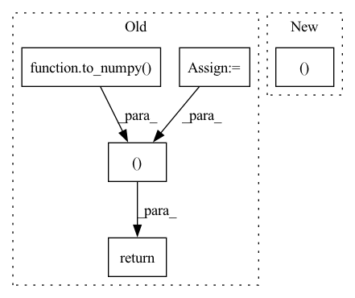

Pattern ID :20496

Before Change
[0, 2]], dtype=int64)
users = to_numpy(log, "user_idx")
items = to_numpy(log, "item_idx")
relevance = to_numpy(log, "relevance")
return csr_matrix((relevance, (items, users)))
def to_numpy(log: DataFrame, col: str) -> np.ndarray:
After Change
[0, 2]], dtype=int64)
df = log.select("user_idx", "item_idx", "relevance").toPandas()
return csr_matrix((df.relevance, (df.item_idx, df.user_idx)))
In pattern: SUPERPATTERN
Frequency: 3
Non-data size: 5
Instances
Fragment ID: 66273970
Project Name: sb-ai-lab/replay
Commit Name: d64dec49c52992118860248b7aba033c903c12b9
Time: 2020-04-30
Author: yytamm@sberbank.ru
File Name: sponge_bob_magic/utils.py
M Class Name: AnonimousClass
N Class Name: AnonimousClass
M Method Name: to_csr(1)
N Method Name: to_csr(1)
M Parent Class:
N Parent Class:
M File Name: sponge_bob_magic/utils.py
N File Name: sponge_bob_magic/utils.py
M Start Line: 277
M End Line: 280
N Start Line: 277
N End Line: 278
'>
Before Change
[0, 0],
[0, 2]], dtype=int64)
users = to_numpy(log, "user_idx")
items = to_numpy(log, "item_idx")
relevance = to_numpy(log, "relevance")
return csr_matrix((relevance, (items, users)))
def to_numpy(log: DataFrame, col: str) -> np.ndarray:
After Change
[0, 2]], dtype=int64)
df = log.select("user_idx", "item_idx", "relevance").toPandas()
return csr_matrix((df.relevance, (df.item_idx, df.user_idx)))
'>
Fragment ID: 66273968
Project Name: sb-ai-lab/replay
Commit Name: 11d2dcf0cc56cfcbaee2c35e801681acf6757d9a
Time: 2020-05-07
Author: yytamm@sberbank.ru
File Name: sponge_bob_magic/utils.py
M Class Name: AnonimousClass
N Class Name: AnonimousClass
M Method Name: to_csr(1)
N Method Name: to_csr(1)
M Parent Class:
N Parent Class:
M File Name: sponge_bob_magic/utils.py
N File Name: sponge_bob_magic/utils.py
M Start Line: 277
M End Line: 280
N Start Line: 277
N End Line: 278
'>
Before Change
integration_domain.requires_grad = True
// Compute integral
result = integrate(integration_domain=integration_domain, **integrate_kwargs)
result_np = to_numpy(result)
// Check for presence of gradient and correct dtype
assert hasattr(result, "grad_fn")
assert get_dtype_name(result) == dtype_name
// Backprop gradient through integral and get the gradient
result.backward()
gradient = integration_domain.grad
assert get_dtype_name(gradient) == dtype_name
return to_numpy(gradient), result_np
elif backend == "jax":
import jax
After Change
// Calculate the value and gradient
value_and_grad_func = jax.value_and_grad(func)
result, gradient = value_and_grad_func(param)
elif backend == "tensorflow":
import tensorflow as tf
'>
Fragment ID: 66273959
Project Name: esa/torchquad
Commit Name: 6e2decb33e025d0a819856edad92436fa1ecb5da
Time: 2022-03-14
Author: ga84muv@mytum.de
File Name: torchquad/tests/gradient_test.py
M Class Name: AnonimousClass
N Class Name: AnonimousClass
M Method Name: _calculate_gradient(4)
N Method Name: _calculate_gradient(5)
M Parent Class:
N Parent Class:
M File Name: torchquad/tests/gradient_test.py
N File Name: torchquad/tests/gradient_test.py
M Start Line: 42
M End Line: 110
N Start Line: 72
N End Line: 113